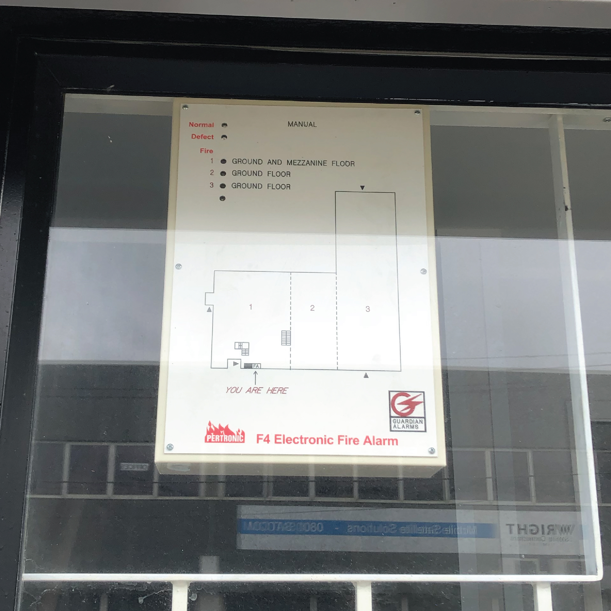
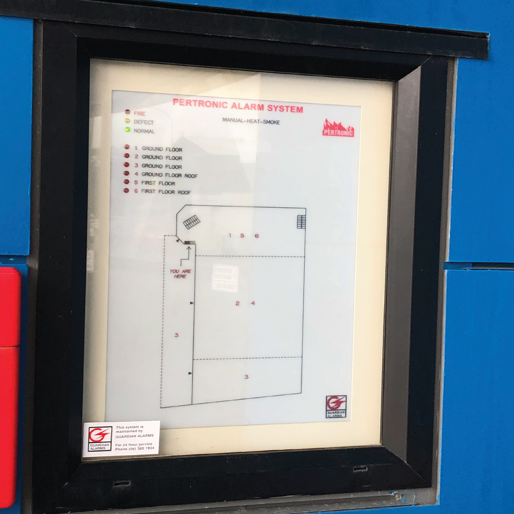
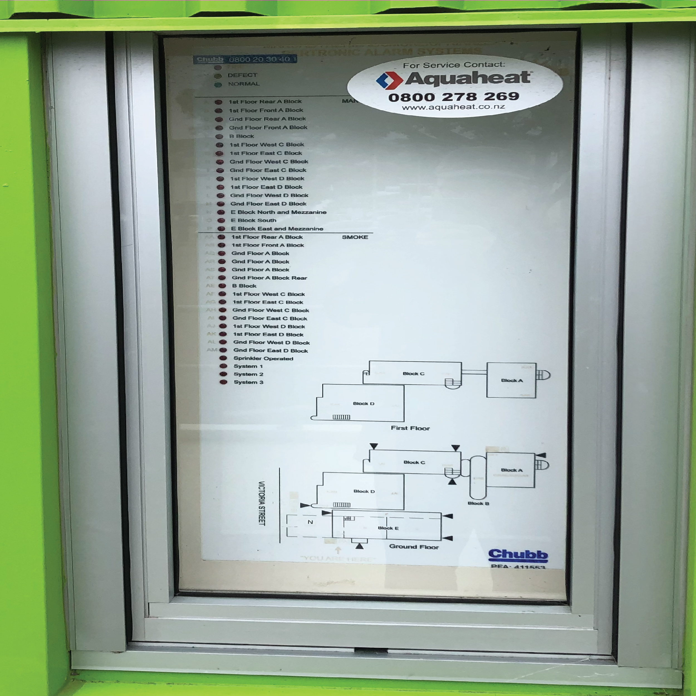
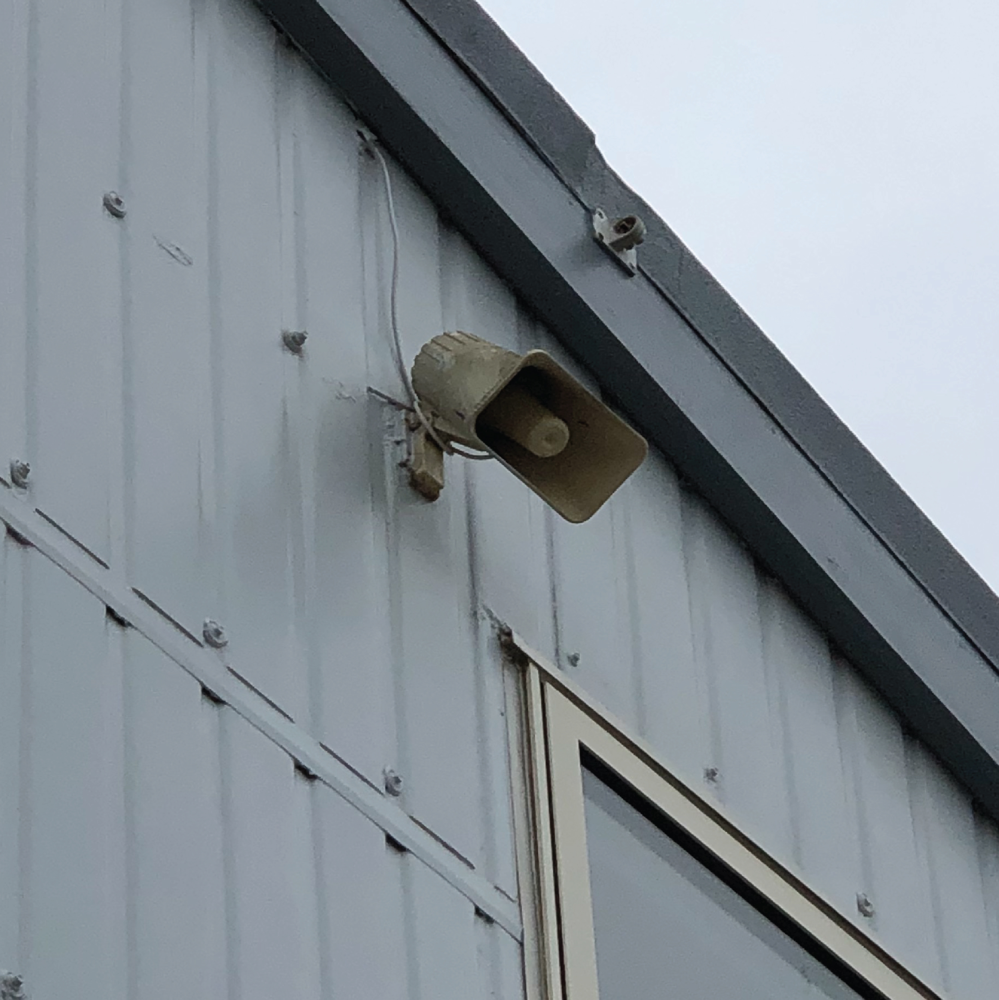
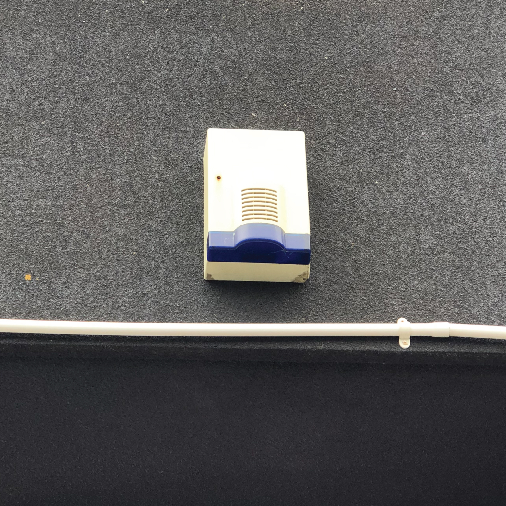

Antennae have been wildly used throughout the Wellington city, including the transportation system, industrial area and residential area. It has made the network more accessible and cheaper.
These fire alarm units were found across all buildings and industrial areas. Most of these alarm system creates connections between the property and fire station. The fire alarm network increases the safty among our communities.
These devices were found all around the buildings. It has become increasingly common to see these devices around the city. It somehow creates the network among us.